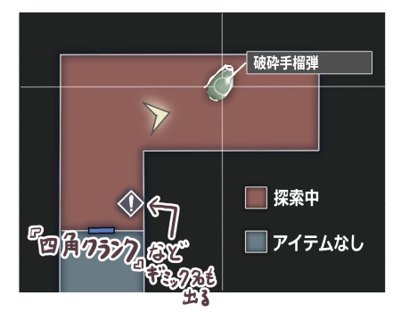

■2026-03-07 (土) バイオハザードシリーズ＆レクイエムのお勉強メモ▼
今回は「遊ばせてもらったゲームで感動した工夫を、お勉強がてら開発日誌に載せておきたい！」記事、『バイオハザード』編です！
というのもね、バイオハザードの新作が出たんですよ！
その名も『バイオハザード レクイエム（実質9）』！
『バイオハザード レクイエム』は2026年の2月27日に発売されたTPS/FPSの探索型サバイバルホラーゲームです。ゾンビやクリーチャーと戦いながらマップを探索し、アイテムを集めたり謎解きをして物語を進めていくのが主な流れとなっています。
↓ヒロインの少女エミリー。盲目銀髪ウェーブヘアっ子とか私がとても好きそうなキャラですね！？
ちなみに私、バイオハザードシリーズは所有ハードの都合でシリーズの途中が遊べていないものもありますが、実はそこそこ遊んでいます！
過去に遊んだことがあるのは1(初期版)、2(初期版)、3、4、コード:ベロニカ、リベレーションズ、8、RE:2、RE:3で、それ以外の作品はプレイできていないので、その前提でお読みください。
記事の内容としてはバイオハザードのゲームデザインや、ゲーム内に取り入れられている開発者視点での工夫の話をしていて、たとえば「昔のバイオハザードは【判断】が重要なサバイバル風ゲームで、後期になるほどバトル重視になったり、サバイバル感をうまく復活させようとしたりしている感じですよね」といった内容が含まれます。
気になる方は、どうぞ読み進めてください。
【注意】
今回のお話にはホラー成分が薄まるかもしれないネタバレもありますので、読まれる際はその点、あらかじめご注意ください！
ホラーで怖さを感じるための主成分は「未知」であることですからね！
実際、公式サイトでもそういう分け方を意識されているっぽかったので、今回はそれを「1.サバイバル」「1+.強サバイバル」「2.バトル」の3つに分けて、以下に紹介していきます。
（なお、ここでは「カジュアル」モードでない、初見の「通常難易度（中～高難易度）」くらいのプレイを想定しています。私が主に遊ぶモードです）
●1. 【サバイバル】アイテム取捨選択型、リソース節約
初期のバイオハザード1～3の時代は、探索と使う武器の判断さえしっかりしていれば、しっかり弾を使って通り道の敵をほとんど倒していってもほぼ問題ないプレイ感でした。
ただ、まともに毎回撃退してると弾の消費が激しくなる「広い道でのゾンビの群れ」や「不死身なのに頻繁に出現する強敵」が2あたりから登場していて、「敵を回避しなければいけなさそうな局面」を作ることは徐々に意識されていたと思います。
ちなみに1はそもそも初バイオハザードであり他に似たような作品がなく、探索中に何が出てくるか分からなくて進むだけでも十分な怖さがあり、新たな敵との戦いや遭遇だけでもプレッシャーがすごい作品でした。
そのため敵を無視してかわす場面は少なく、「無限に補給できない弾（当時では珍しい印象！）」を消費して倒して進んでいく、というゲーム性だけでもリソース(=アイテムや弾薬)的に十分に怖く感じる作品となっていたのです。
1～3の時代のゲーム性は、
●相手に合わせて適切な銃を使うことで弾の消費を抑える（仕様上、銃は撃てばほぼ必中で当たる）
●そもそも手持ちアイテム枠が6～8枠しかないので、敵の編成が未知の中で、どの銃と弾と空きアイテム欄を用意して探索を進めるのが効率がいいか考え続ける必要がある。
というのが私が体験したプレイで、「判断をし続ける」ということが重要なゲーム部分だと感じていました。
もちろんいくらかのアクション性もありますが、重み的には上記の「判断」部分がすごく大きかった印象です。なので、遠目に見ればリソース管理重視のRPGにも近いゲーム性だったような気もします。
（ちなみに海外版は日本版のように射撃がオートロックじゃなかったらしく、手に入る弾が多い代わりに手動で角度を合わせて当てるシューティング要素が含まれていたそうです）
●1+. 【強サバイバル】戦闘回避型、リソース振り分け判断型
こちらは「1.サバイバル」をさらに進化させた「遊び」です。
「持っていくべきアイテムの判断」の遊びはそのまま引き継がれていますが、さらに判断部分が深く、重くなっています。
前提として、この【強サバイバル】では【1.サバイバル】と違い、全ての敵を倒すには「弾や打開アイテム」が足りない状態がたくさん発生します（少なくとも前半は）。
その結果、【何度も通りそうなルートの敵】だけしっかりとどめを刺して、【倒さなくても問題ない敵】は少ない弾で転倒させたりして省リソースで進む、といった戦闘回避型、かつ、「どこに弾を費やせばうまく生き残れるか」というリソース振り分けの判断プレイが求められるようになっています。
このゲーム性は、今の判断がどれだけ合ってるか分からない中でずっとゲームを進めなければならず、『物資や弾薬を使うべき場所は正しかったか、最終的に足りるのか』の答えは、1回クリアする瞬間までは与えられません。その緊張感が、ゲームへの興味を持続させています。
この緊張感を生む仕組みにより、「緊張感が辛すぎてやめる」ことはもしかしたらあるかもしれませんが、「退屈でやめる」可能性はほぼないだろうと感じました。
さらに、移動中に保有できるアイテムも相変わらず「8種類前後」とかなり限定されていて、まだ生きてる敵がうろついている中を【行き来を最小限に、ルートを最適化】しつつ行動する必要もでてきます。
つまり、「撃つべきか」「撃たずに避けるか」「何をどれだけ持つべきか」「安全なルート構築をどうするか」……とにかく判断、判断、判断の連続です！
何かは置いていかざるを得ず、大局的に正解か否かも明かされず、恐れを抱え続けながら進まねばならない重さが常に心をむしばみ続けます。
これは「明日も水を飲むことができるのか」という不安にやや近い緊張感であり、慣れない内はまさに本能に訴えかけてきます。
このバランスを明確に開拓したのは、私が知る限りでは『バイオハザード RE:2』あたりで、弾が残り1桁の状況が出るわ、不死身の大男がドアを開けて隣の隣の隣の部屋までずっと追いかけ続けてくるわで、「リソース面での」ホラー感が最大限に生み出されていました。
なお私は当時、RE:2で弾薬ゼロになってしまった瞬間のストレスにびっくりしていました。
「弾が0になったけど次の廊下にゾンビがいたらどうすんの！？ ナイフももうないし倒せないじゃん！」って。
いやあ、「ゲーム的に死ぬことがない『演出だけのホラー』」はもはやそんなに怖くなくなっていた私でも、リソース型ホラーは恐怖感がすごかったですね……。
さらに言うと「無思考に全部倒せないようにするため」か、原作の2では無制限に使えたナイフも、RE:2では【消耗品】にされており、リソース的ホラーを感じさせるためのものすごく強力な意図があったことがうかがえます。
この【強サバイバル】への徹底したコンセプトの貫きっぷりが本当にすごい、ゲーム作りがうますぎる。
このリソース型ホラー概念は他のゲームでも使える発想だと思いますので、私も忘れないようにしたいと思っている造りです。
だいたいどんなゲームでもドキドキさせるのに使えそうです。
ゲームバランスが整ってないと、逆にひどいことになりそうですけども！
●2. 【バトル】積極戦闘型・無双・自己強化型
そしてこちらはうってかわって別の遊びで、敵がわらわら出てくる中を、様々な銃や格闘を駆使しながら（基本的に）全部倒して突破することが主となる遊びです。
そして、たまったポイントやお金を使って武器などをガンガン購入・強化して、強くなったことを味わいながら進みます。
『バイオハザード4』（あるいはそれ以降のしばらくのナンバリング）がこれにあたると思います。
いつも通り演出が怖いのは怖いのですが、「リソース切れ」の恐怖はほとんどなくなっており、どの武器から買い、どの武器をどう強化していけば敵をより効率的に倒せるかを考えていく「加点方式」の遊びが多くなっています。
ゾンビも倒せば報酬が出ることが多く、何なら倒さなくてもいいゾンビでも目に入ったら倒すまであります。
さらに言うとアイテム所持枠もかなり潤沢で、各種の銃+弾薬を4丁分持って、回復とイベントアイテムも全部持ち歩くなんてことも平気でできます（これまでのアイテム8枠制だと絶対持てなかった量）。
なので、【サバイバル】側のような、
「弾がなくなったらどうするの！？」
「いやだ、見つからないで……横こっそり通らせて……！」
「アイテム欄に空きがないから予備弾なしで行くしかない……！」
みたいにドキドキしながら遊ぶのと比べるとまったく真逆で笑えますが、ホラー部分の演出自体はしっかりホラーを感じさせるもので、4は名作だったんですよね。
ちなみにリソースに関しては、4では「一種類の銃ばかり使っていると弾切れを起こす」こともありますが、「相手や状況に合わせてバランスよく武器を切り替えして使っている限りは敵を全部倒していってもほぼ弾がなくならない」くらいに調整されていました。
つまりバトルの遊びを追究したナンバリングでは、色んな方面でリソース面でのホラー感が少なめになっていたわけです。
というより、弾切れで何もできなくなる可能性があるほど弾が少ないと、バトル系として面白くない！
という感じで、もともと【サバイバル】とは両立できない要素があった中で、4で全体をすみずみまで【バトル】系にしっかり振って刷新されていたのは、いま思うとものすごい思い切りだと感じます。
ゲームを作るのがうまい！（2回目）
以上、ここまでの3つが、私が認識しているバイオハザードシリーズの「遊び」です。
4以降のナンバリングではバトル系に寄っていたらしいのですが、以降、ときどきサバイバル感を取り戻そうとする試みもなされていました。
実は私が好きなのは判断が重い「サバイバル」側の方だったんですよね！
後述の最新作レクイエムの話題でも、このサバイバルとバトルの話が出てきますので、覚えておいてください。
これはバイオハザード2からの工夫なのですが、バイオハザードでは「とどめをさせない不死身の強敵がマップ内を徘徊しており、ときどき遭遇する」という場面をたびたび発生させています。
そしてこの仕組み、本当にずっと恐怖を引きずります！
イベント戦で完全にとどめを刺すまでの間、どこにいてもその強敵に遭遇する可能性がチラつき続け、なかなか安心できないのです！
なおこういった不死身の強敵は、かなりの火力をたたき込めば一時的にダウン・撤退しますが、また一定時間後に追ってきます。
弾薬や回復アイテムが心配な【サバイバル】の遊びの中でこれら強敵と戦うのは、かなりの高リスクです。
【完全に対策できない脅威がずっと残る】という状況は、ホラーゲームにおいては普通と言えば普通の工夫なのですが、本作では（無限湧きしないように見える）弾がなくなってしまえば他の弱い敵にも対応不能になるわけで、心理的恐怖はすさまじく大きいものとなります。
言い換えると、バイオハザードシリーズ特有の、「有限の弾」と「(無駄に探索時間をかけていると)無限に出てくる強敵」の相乗効果は――プレイヤーの【安心】を破壊する機能としては最悪の組み合わせなんですよ！
だからこそ、「最小の手順やルートでなんとか状況を打開しよう」「この状況から早く逃げたい！」と心から強く思えました、特にRE:2では！
ホラーゲームとしてプレイヤーにこう思わせられるのは本当に理想的な状況で、なかなかそう簡単には生み出せないものですよね。いやあ、すばらしい！
バイオハザードを久々にやったのが「RE:2」だったのですが、そのときのマップの進歩に感動したんですよね！
それで「バイオハザードRE:2のマップがよかった話」という記事まで書いたこともあるくらいには感心していました。
そのときに書いたマップの再現見本が、以下の絵です。
このマップの機能は、シンプルに言うと次の3つです。
●「目に入ったアイテム」がマップに全部記録される。
●「未解決のギミック」がマップに全部記録される。
●「まだ何かある」部屋は赤くなり、「探索済み」の部屋は青く表示される。
つまり、
●アイテムを回収する際にマップを見てルートを最適化できる。
●ギミックを一度調べたらどこにあったかすぐ思い出せる。
という、「無駄な移動をせずに最適な移動計画を立てる」ための、『真にマップとしての機能があるマップ』なんですよ！
プレイヤー視点だと、どこに無敵の敵が出てくるか分からない中で移動を効率化できたり、無駄な時間をかけなくて済むので喜べるマップなんですが、開発者的にもおそらく利点があります。
というのも、マップを使って効率的に移動できると、親切なだけでなく「怖さのペースを最大化できる」効用が大きいんですよ！
たとえば何もないところを探索し直しているうちに怖さも感じなくなってうんざりしてる実況プレイヤーさんなどを見たことありませんか？
でもマップがいいとね、こういうのがほぼなくなるんです！
実際、今作レクイエムで「次に行く場所が全然分からなかった回数」は本当に数えるほどしかなく、ほぼ全ての移動で目的意識を持って、テンポ良く遊ぶことができました。
※ちなみに、今作レクイエムでは「部屋の色分け表示」機能だけはなくなっていました。「アイテム回収しなさいよ」という圧が出すぎるからか、なくても特に問題なかった印象です
まず前提として、バイオハザードシリーズは有効な武器や戦い方、あるいは戦いの回避方法の知識があれば、そこそこ簡単に対抗できるゲームです。
逆に、それが分からないと大苦戦するか、あるいは状況次第では詰みます。
そうなると、プレイ中の体験は以下のように分岐するわけです。
●【うまくいった人】危機的状況でも自分で謎や効果的な対策に気付いて解決でき、「自分で思いつけた！ 思いつけなかったら死んでた！ やったぜ！」感が強く味わえる。
●【うまくいかなかった人】一方で、気付けなかった人は状況次第で永久に詰んでしまう。
そこで役立っているのが【ゲームオーバー時のヒント】！
知識やテクニックが必要な場面で死亡した場合、死亡時ヒントとしてその対策が説明されるので「あー何度もわからん殺しされる！ 詰んだ！」みたいな状況が非常に起きにくくなっているのです！
このヒントの仕組み自体はものすごく単純ですが、うまくできた人には何も説明せずに「やってやったぜ」感だけを与えて、うまくできない人には「分からなくて進めない人を減らす」という配慮を与えることを両立できて、すばらしいやり方なんですよね！
私も難しめのゲームを作るなら、追加ヒントの出し方はこれに頼るだろうなと思います。
といいますか、私の『片道勇者』のゲームオーバー時のヒントもまさにそんなのでしたね。
そちらは死亡ケースごとに、プレイ中に使われていなかった可能性が高いテクニックについて再説明を行うヒント機能でした。
このヒントの仕組みはバイオハザードの基本のゲーム性として、バトルやアクション部分ですら【知識ゲーム、謎解きゲーム】の側面があるからこそ、やりやすかった工夫だと思います。
特に、この死亡時ヒントが出せるようになったバイオハザード作品あたりから、「初見時ではすぐ思いつかないかもしれない、戦闘や危険状況での難しめの課題」もゲーム側から出されるようになっている気がして、なんとなくやりごたえが上がっていた気がするんですよね。
●気づける人には優越感を感じられるくらいの課題を
●気づけない人でも進める配慮を
この両立ができる「ゲームオーバー時のヒント」は、今後も自分のゲーム開発において使っていこうと思える工夫です。
一部の作品ではそれが両立されていることもあり、多くの場合は以下のような流れになっていたように思います。
●前半は残弾が20発をなかなか超えないほどリソースがヒリつく中で『サバイバル』をしつつ、後半になるにつれてどんどん弾や強化が潤沢になって無双気味になっていき『バトル』感が増してくる
が、バイオハザードレクイエムではなんと！
ゲーム序盤から終盤までそれを『両立』しているんですよ！
グレースとレオンという二人の主人公がいて、遊びが完全に差別化されているのです。
これは公式サイトではグレースは「震えおののく恐怖」、レオンは「死を打ち倒すアクション」として説明されており、ホラーとバトル要素を両立できる仕組みとしてしっかり自覚されています。
といいますか、これこそが公式サイトの「ゲームプレイ」欄で一番上に紹介されている目玉要素なんですよね！
分からない人から見たら「モードが2つあるからどうなん？」って話かもしれませんが、分かってる人から見ると、「『バイオハザード』の理想の型が二分されている中で、両者を満足させられる自信があるアイデアなんだ！」というのが分かります。
二人のパートは進行にともなって交互に切り替わるのですが、実際に遊んだ感想としては以下の通りでした。
●グレース：判断が重いプレイ
まず公式サイトでは「グレースは入手できる物資、持ち運べる量が限られる。どの敵を倒し、どの敵をやり過ごすのか？ 死と隣り合わせの決断が迫られる」とあり、完全に私が遊んで感じた通りの説明が書かれています（遊ぶ前にこの文章で伝わるかどうかは分かりませんが、『やり過ごす要素』が必要なことを示してるのは攻略情報的にえらい！）
グレースは戦闘はおそらく得意ではなく、拳銃くらいしか使えない代わりに、化学薬品をクラフトする能力がレオンより高いです。
が、素材となるアイテム入手量も一見少ないので、どのアイテムを作るべきか本当に限界の判断が求められ、リソース管理バリバリのサバイバルプレイが求められます。
さらにはそれを突き詰めるように、グレースには『無限に使える武器』が一切ありません。近接武器のナイフですら消耗品です！
なので全部の敵が倒せないことが確定している中、他のことに気を取られているゾンビがいたらその横を
「お願い気付かないで……あと弾5発しかない……（1体倒すのに当たりが良くても3～4発くらい使う）」
みたいにドキドキしながら進むハメになります。
しかもそれらのゾンビも、「時間が経つと後で廊下に出てきたりする」という流れで、ストーリー進行にともなって、元は敵がいなかった場所にも敵キャラが補給されることもあるのです。（ちなみに「倒したゾンビが強化されて復活する」など、他の手段でも敵キャラは補給されます。ゾンビ強化復活は1のリメイクにあった要素らしいですね！）
こういった不確定感と残弾の少なさが、ひたすらグレース編でのリソース的な恐怖をあおってきます。
●レオン：バトルを楽しむプレイ
一方、レオンは無双系のプレイ感です。
公式サイトの記述には「レオンは銃器や近接武器「トマホーク」にくわえ体術やパリィ、さらに敵の武器での攻撃も可能。あらゆる戦闘手段を使い分けて敵をなぎ倒せ」とあり、こちらも完全にプレイ感通りの説明でした（遊ぶ前は具体的にイメージできるか分かりませんが、『戦闘手段の使い分けが必要』なことを示してるのは攻略情報的にえらい！）
レオンは様々な銃器を使いこなせる上に、何なら近接攻撃（斧）だけでも、1体ずつであれば無限のゾンビを倒すこともできるプロのエージェントです。
ちゃんと弾を拾って、弾を購入して、銃を1本に偏らないように使っている限りは銃弾はほぼなくならず、基本的には出てくる敵を片っ端から全部倒せます！
近接武器の斧もゾンビ相手ならかなり強いにもかかわらず、絶対壊れないし、ちょっと研げば耐久力が回復するので使い放題です！ グレースと違いすぎてヤバい。
一方で、敵の攻撃にタイミングを合わせてパリィ（猶予時間は長い、けど私は敵の予兆を見誤ってシクりまくります）するというタイミングアクションがあり、使う比重は少ないにせよ、これをしっかり使えないと高難易度ではしんどそうなイメージがありました。
●この二人の使い方
で、この二人をどうゲームで扱っているかですが、特筆すべきはこの二人が同じマップを「時間差で」探索するパート！ これが面白いところでして！
というのも、グレース編では泣きながら敵を回避して進めてたマップをですね！
レオンに切り替わると敵を壊滅させながら進められるんですよ！
何なら、一見倒し方が分からなかったようなやつまで火力で倒せる！
「これまでサバイバルプレイ側で怯えていた敵たちにバトルプレイ側で逆襲できる」というのはこれまでになかった新しい遊びで、今や「サバイバル要素」も「バトル要素」もシリーズの含有成分になっているバイオハザードの一つの完成系として、レクイエムはとても仕上がっている感じがありました。
「恐怖 → 我慢 → 逆襲」という快感！
なにかのイベントギミックで倒す展開とは違って、『かつて倒せなくて怖くて逃げ回ってたアイツを、ちゃんと自分の武器を使ってゲーム的手段で倒す』みたいな展開がね！ アツい！
体験できる回数やタイミングは少なかったにせよ、主人公の強さで敵の「怖さ」が変わるのは面白い体験でした。
普通のホラーゲームでは、半一般人が怯えて走り回ったあとに、特殊部隊員が同じ場所で無双するパートとか普通は入らないですからね！
●廊下の電気が付いてたら消しに来るゾンビ（「電気は消しましょう」みたいなことを言っている）
●音に反応してバーサークするゾンビ（うるさい音がきらいそうな発言をしている）
●歌ったり音波攻撃してくるゾンビ（待機中も歌ってる）
●料理長っぽいゾンビ（キッチンで料理している、でかくてめちゃ強そう）
過去作4でも「生活を続けるゾンビ的な敵」がいて、これらと似た雰囲気を出していたのですが、本作では能力や対策もしっかり尖っててこれが面白いんですよ！
何より、ゾンビ本人が「主人公に通じる言語」で独り言をしゃべって個性の自己紹介をしている、というのがとても分かりやすい！
その言葉を聞いて、「こう対応すれば回避できるんじゃないかな？」あるいは「こうやれば利用できるんじゃないかな？」というのがイメージしやすかったのが、非常にすばらしいと感じました。
そして同時に、これを見て「うまいこと4などの過去作の発想を洗練してきているなあ！」とも感じたのです。
4の敵は主人公が何もしなくても生活（するフリ）をしており、武器や爆弾や罠なども使って襲ってきていましたが、プレイヤーにとって分からない言語でしゃべっていたので、相手の特性を利用する工夫はそこまでやれなかったんですよね。
せいぜい敵が持っている爆弾を撃って爆発させるような、見て分かる対処くらいで。
それに比べると、レクイエムではより敵の個性が洗練されています。
レクイエムはこういった面でも「まだ新しくできる発想があるんだなあ！」と色々な可能性を感じさせてくれました。
そのたびに逃げては、撃退のための工夫やギミックを発動したり、あるいは強力な弾を使う必要があり、「遭遇回数を減らすためにも早く用事を片付けたい……！」と思わせてくれるのは従来通りです！ 何度体験しても、初めてだと怖い！
また、「（弾が足りなくて）今は倒せないように見える強敵」でも実は倒せるものもいて、
「通常の戦い方だと倒すの大変だけど、実はアレを使えば簡単に倒せる」
「無敵に見えるが、実はリソースを大量投入してアレコレすれば倒せてしまう」
みたいな部分もあったりして、分かると「へー！」と思えるものになっています。
1周目にできなかった倒し方を2周目などでやってみると「そうそう、こういうのができるのがいいんですよ！」と思えてとてもよかったです。
そうか、アレで倒せるんだ……みたいな。
たとえばゲーム中のコレクションアイテムを集めたり、縛りプレイや特定の行動を成功させることで「チャレンジポイント（CP）」がもらえ、CPを消費することで最初から「特殊な武器」を使えたり、「弾薬無限」（！）などのボーナスを得ることができるのです。
過去作のは、達成条件が自分には難しかったり周回する余裕がなかったりして、あまりチャレンジ要素に注目していなかったのですが、今回のはちょっとした縛りプレイで大きくポイントを得られるようになっていて、ちょっとした味変を楽しみつつチャレンジできるのが「なるほど！」と思いました。
たとえば「回復なしでプレイ」とか「血液（アイテム合成に使う）の回収禁止」という縛りをすると、一回だけですが35000CPみたいにたくさんのポイントが手に入るんですよ！ 逆に「血液を累計で一定値以上回収する」ことで達成できる10000CPのチャレンジなどもあります。
もっと細かい単位で色んなやりこみ目標があっても面白いのかなーとも思いつつ、次のプレイがちょっと楽しくなったり、目標にできる「味変」的な要素があるのはうれしかったので、これからもぜひ入れていただきたいですね！
今回のは「とりあえず弾薬無限の50000CPを貯めるために『回復なし』とアレとアレに挑戦してみるか！」みたいに周回モチベーションになる目標設定ができてよかったので！
こういった周回による『味変』要素は、1周が短いローグライクであるうちの『片道勇者』シリーズにおいてはもっと重要になる部分なので、色んなゲームから学んで考えていきたい点です。
「1回きりの、大きなポイントを入手できるチャレンジ要素」みたいなのは、ローグライクにあってもいいかもしれませんね。「特別ルールの世界をクリアするとトロフィーと一緒にそういったポイントボーナスが付く」とか！
難易度によって効き方は違うようですが、最初から選べる難易度の範囲ではどれでも想像以上に強力でした（なお、クリア後に出てくるインサニティー難易度では使用できません）。
たとえば照準アシスト機能を強めに設定すると、構えながらゾンビの上半身付近に照準を近づけただけで、勝手に照準が敵の『頭』にかなり強く吸い付き、ずっとヘッドショットを狙いやすい状態になります。
逆に腰より下では『足』に吸い付くようで、少ない弾で転倒させたいときにも役立ちます。
つまり、効果別に有効打を与えられる部位へロックされるようです。
つまりこの機能を遠慮なく使えば、「精密に狙う」という遊びはかなり薄くできます！
これは初期のバイオハザード1～3あたりの遊びに近い感覚です。
当時はオートエイムで、構えて撃てばほぼ当たっていましたからね。
面白いのは、それでもバイオハザードの面白さがあまり失われないこと！
なぜなら本作の面白さは、狙いの正確さだけでなく、何度も言うように以下のような判断部分にも強く支えられているからです。
●適切なポジション取りや、囲まれたら下がる判断
●いつ狙い撃ち状態にするかの判断（狙い中は移動が遅くなる）
●何を持っていくべきか悩む判断
●ここで弾を使うか使わないか、どの武器を使うか悩む判断
●どこを通って行くか悩む判断
つまり、狙いの難しさが大きく減っても、「撃つべきか」「どこで戦うべきか」を考える遊びはなくならないのです。実際、照準アシストを強くしても十分面白い！
これはある種の救済的な優しさですが、同時に、開発側が「このゲームの面白さの核がどこにあるか」を自覚しているからこそできる割り切りでもあるように感じました。
ゲーム開発者的には、『複数重なっている遊びのどれか1つだけでも楽しんでもらえる』方が、幸福の総量を増やせます。
多くの人に遊んでもらうゲームにするなら、こういった思い切りは非常に合理的な配慮だと感じます。
自分の作ったそのゲームの『面白さの核』がどこにあって、どうすればより幅広い人にも遊んでもらえるのか。
そういうことを考えるうえでも、思い切った照準アシストの設計思想はとても勉強になりました。
こういうキレッキレの判断、できるようになっていきたいですね！
●バイオハザードは4以降からバトル方面が強くなり気味で
●リベレーションズや7あたりからリソース的ホラー部分の再取り込みをがんばっておられた
という印象があったのですが、レクイエムは「それを1本として両立させて完成させた形だ！ すげぇ！」という驚きがありました。
これはリソース的ホラーとバトル、両面での『バイオハザード』を楽しみたかった私みたいな人にはすごく満足感の高い型だったと思います。
矛盾した二つの方向性を融合しようとここまで考えてこられた開発の皆さまには頭が下がります！
でもきっとこの二つの要素こそ、歴史を重ねて積み重ねられた『バイオハザードらしさ』なんですよね、とも思います。
歴史がないシリーズが同じことをマネしても「一貫性がないゲームだ」なんて言われるかもしれないけど、本作はしっかりバイオハザードとしての歴史の集大成だと感じます。
ちなみにレクイエムは（といいますかバイオハザード全作品にうっすら言えますが）、過去作を遊んだ人へのファンサービスも満載で、それも見逃せない要素ですよ！
家庭用ゲームでここまでお腹いっぱいになれるファンサービスに出会えたのは本当に久々でした。
特に「RE:2」を遊んでおられた人には繋がりが多くておすすめの1本です。
といいますか、感触だけなら実質「RE:2」の続編っぽい立ち位置かも！ まだ遊ばれてない方はぜひ「RE:2」も遊んでみてください。
バイオハザードは「サバイバルホラーゲーム」ですが、ゲーム部分の底にあるのは「判断を楽しむゲーム」だと思っています。
だからこそ私にとって大好きなシリーズでしたし、【サバイバル】部分への部分的回帰を感じさせるものになるほど大きな興味や面白さを感じられます。
レクイエムはそういう意味で、満足度が非常に高い一本でした。
これから先のバイオハザードシリーズで取り入れられるであろう様々な挑戦も、今から楽しみです。
そして同時に、遊ばせていただくからには、自分のゲームにも活かせそうなところはしっかり学んでいきたいですね！
というのもね、バイオハザードの新作が出たんですよ！
その名も『バイオハザード レクイエム（実質9）』！
『バイオハザード レクイエム』は2026年の2月27日に発売されたTPS/FPSの探索型サバイバルホラーゲームです。ゾンビやクリーチャーと戦いながらマップを探索し、アイテムを集めたり謎解きをして物語を進めていくのが主な流れとなっています。
↓ヒロインの少女エミリー。盲目銀髪ウェーブヘアっ子とか私がとても好きそうなキャラですね！？
ちなみに私、バイオハザードシリーズは所有ハードの都合でシリーズの途中が遊べていないものもありますが、実はそこそこ遊んでいます！
過去に遊んだことがあるのは1(初期版)、2(初期版)、3、4、コード:ベロニカ、リベレーションズ、8、RE:2、RE:3で、それ以外の作品はプレイできていないので、その前提でお読みください。
記事の内容としてはバイオハザードのゲームデザインや、ゲーム内に取り入れられている開発者視点での工夫の話をしていて、たとえば「昔のバイオハザードは【判断】が重要なサバイバル風ゲームで、後期になるほどバトル重視になったり、サバイバル感をうまく復活させようとしたりしている感じですよね」といった内容が含まれます。
気になる方は、どうぞ読み進めてください。
【注意】
今回のお話にはホラー成分が薄まるかもしれないネタバレもありますので、読まれる際はその点、あらかじめご注意ください！
ホラーで怖さを感じるための主成分は「未知」であることですからね！
- ◆バイオハザードシリーズから学んだこと
- - 【そもそもバイオハザードにはどんな「遊び」が作られてきたのか】
- - 【今の火力では倒しきれない敵、倒しにくい敵がうろうろしてて怖い状態が続く】
- - 【地味に超大事な配慮：マップが超親切】
- - 【ちょっとした工夫：ゲームオーバー時にヒントが出る親切さ】
- ◆ではバイオハザードレクイエムならではの楽しみは？
- - 【キャラ性能を分けることで最後まで「遊び」を両立 ＆ 逆襲の楽しみ】
- - 【敵の個性化が面白い】
- - 【「今は倒せないが襲ってくる敵」を長い時間、活用している】
- - 【最近よくあるクリア後の「味変(あじへん)」要素】
- - 【オプションの照準アシストが超強力だが、狙う難しさがなくなっても面白い】
- ◆まとめ：振り返る歴史
◆バイオハザードシリーズから学んだこと
まず前提・復習として、バイオハザードシリーズ全体を通した私の印象や、これまで勉強になっていたことを列挙していきます。【そもそもバイオハザードにはどんな「遊び」が作られてきたのか】
私の知る範囲のバイオハザードでは、大きく分けてサバイバルとバトルの2種類の楽しみがあると認識していました。実際、公式サイトでもそういう分け方を意識されているっぽかったので、今回はそれを「1.サバイバル」「1+.強サバイバル」「2.バトル」の3つに分けて、以下に紹介していきます。
（なお、ここでは「カジュアル」モードでない、初見の「通常難易度（中～高難易度）」くらいのプレイを想定しています。私が主に遊ぶモードです）
●1. 【サバイバル】アイテム取捨選択型、リソース節約
初期のバイオハザード1～3の時代は、探索と使う武器の判断さえしっかりしていれば、しっかり弾を使って通り道の敵をほとんど倒していってもほぼ問題ないプレイ感でした。
ただ、まともに毎回撃退してると弾の消費が激しくなる「広い道でのゾンビの群れ」や「不死身なのに頻繁に出現する強敵」が2あたりから登場していて、「敵を回避しなければいけなさそうな局面」を作ることは徐々に意識されていたと思います。
ちなみに1はそもそも初バイオハザードであり他に似たような作品がなく、探索中に何が出てくるか分からなくて進むだけでも十分な怖さがあり、新たな敵との戦いや遭遇だけでもプレッシャーがすごい作品でした。
そのため敵を無視してかわす場面は少なく、「無限に補給できない弾（当時では珍しい印象！）」を消費して倒して進んでいく、というゲーム性だけでもリソース(=アイテムや弾薬)的に十分に怖く感じる作品となっていたのです。
1～3の時代のゲーム性は、
●相手に合わせて適切な銃を使うことで弾の消費を抑える（仕様上、銃は撃てばほぼ必中で当たる）
●そもそも手持ちアイテム枠が6～8枠しかないので、敵の編成が未知の中で、どの銃と弾と空きアイテム欄を用意して探索を進めるのが効率がいいか考え続ける必要がある。
というのが私が体験したプレイで、「判断をし続ける」ということが重要なゲーム部分だと感じていました。
もちろんいくらかのアクション性もありますが、重み的には上記の「判断」部分がすごく大きかった印象です。なので、遠目に見ればリソース管理重視のRPGにも近いゲーム性だったような気もします。
（ちなみに海外版は日本版のように射撃がオートロックじゃなかったらしく、手に入る弾が多い代わりに手動で角度を合わせて当てるシューティング要素が含まれていたそうです）
●1+. 【強サバイバル】戦闘回避型、リソース振り分け判断型
こちらは「1.サバイバル」をさらに進化させた「遊び」です。
「持っていくべきアイテムの判断」の遊びはそのまま引き継がれていますが、さらに判断部分が深く、重くなっています。
前提として、この【強サバイバル】では【1.サバイバル】と違い、全ての敵を倒すには「弾や打開アイテム」が足りない状態がたくさん発生します（少なくとも前半は）。
その結果、【何度も通りそうなルートの敵】だけしっかりとどめを刺して、【倒さなくても問題ない敵】は少ない弾で転倒させたりして省リソースで進む、といった戦闘回避型、かつ、「どこに弾を費やせばうまく生き残れるか」というリソース振り分けの判断プレイが求められるようになっています。
このゲーム性は、今の判断がどれだけ合ってるか分からない中でずっとゲームを進めなければならず、『物資や弾薬を使うべき場所は正しかったか、最終的に足りるのか』の答えは、1回クリアする瞬間までは与えられません。その緊張感が、ゲームへの興味を持続させています。
この緊張感を生む仕組みにより、「緊張感が辛すぎてやめる」ことはもしかしたらあるかもしれませんが、「退屈でやめる」可能性はほぼないだろうと感じました。
さらに、移動中に保有できるアイテムも相変わらず「8種類前後」とかなり限定されていて、まだ生きてる敵がうろついている中を【行き来を最小限に、ルートを最適化】しつつ行動する必要もでてきます。
つまり、「撃つべきか」「撃たずに避けるか」「何をどれだけ持つべきか」「安全なルート構築をどうするか」……とにかく判断、判断、判断の連続です！
何かは置いていかざるを得ず、大局的に正解か否かも明かされず、恐れを抱え続けながら進まねばならない重さが常に心をむしばみ続けます。
これは「明日も水を飲むことができるのか」という不安にやや近い緊張感であり、慣れない内はまさに本能に訴えかけてきます。
このバランスを明確に開拓したのは、私が知る限りでは『バイオハザード RE:2』あたりで、弾が残り1桁の状況が出るわ、不死身の大男がドアを開けて隣の隣の隣の部屋までずっと追いかけ続けてくるわで、「リソース面での」ホラー感が最大限に生み出されていました。
なお私は当時、RE:2で弾薬ゼロになってしまった瞬間のストレスにびっくりしていました。
「弾が0になったけど次の廊下にゾンビがいたらどうすんの！？ ナイフももうないし倒せないじゃん！」って。
いやあ、「ゲーム的に死ぬことがない『演出だけのホラー』」はもはやそんなに怖くなくなっていた私でも、リソース型ホラーは恐怖感がすごかったですね……。
さらに言うと「無思考に全部倒せないようにするため」か、原作の2では無制限に使えたナイフも、RE:2では【消耗品】にされており、リソース的ホラーを感じさせるためのものすごく強力な意図があったことがうかがえます。
この【強サバイバル】への徹底したコンセプトの貫きっぷりが本当にすごい、ゲーム作りがうますぎる。
このリソース型ホラー概念は他のゲームでも使える発想だと思いますので、私も忘れないようにしたいと思っている造りです。
だいたいどんなゲームでもドキドキさせるのに使えそうです。
ゲームバランスが整ってないと、逆にひどいことになりそうですけども！
●2. 【バトル】積極戦闘型・無双・自己強化型
そしてこちらはうってかわって別の遊びで、敵がわらわら出てくる中を、様々な銃や格闘を駆使しながら（基本的に）全部倒して突破することが主となる遊びです。
そして、たまったポイントやお金を使って武器などをガンガン購入・強化して、強くなったことを味わいながら進みます。
『バイオハザード4』（あるいはそれ以降のしばらくのナンバリング）がこれにあたると思います。
いつも通り演出が怖いのは怖いのですが、「リソース切れ」の恐怖はほとんどなくなっており、どの武器から買い、どの武器をどう強化していけば敵をより効率的に倒せるかを考えていく「加点方式」の遊びが多くなっています。
ゾンビも倒せば報酬が出ることが多く、何なら倒さなくてもいいゾンビでも目に入ったら倒すまであります。
さらに言うとアイテム所持枠もかなり潤沢で、各種の銃+弾薬を4丁分持って、回復とイベントアイテムも全部持ち歩くなんてことも平気でできます（これまでのアイテム8枠制だと絶対持てなかった量）。
なので、【サバイバル】側のような、
「弾がなくなったらどうするの！？」
「いやだ、見つからないで……横こっそり通らせて……！」
「アイテム欄に空きがないから予備弾なしで行くしかない……！」
みたいにドキドキしながら遊ぶのと比べるとまったく真逆で笑えますが、ホラー部分の演出自体はしっかりホラーを感じさせるもので、4は名作だったんですよね。
ちなみにリソースに関しては、4では「一種類の銃ばかり使っていると弾切れを起こす」こともありますが、「相手や状況に合わせてバランスよく武器を切り替えして使っている限りは敵を全部倒していってもほぼ弾がなくならない」くらいに調整されていました。
つまりバトルの遊びを追究したナンバリングでは、色んな方面でリソース面でのホラー感が少なめになっていたわけです。
というより、弾切れで何もできなくなる可能性があるほど弾が少ないと、バトル系として面白くない！
という感じで、もともと【サバイバル】とは両立できない要素があった中で、4で全体をすみずみまで【バトル】系にしっかり振って刷新されていたのは、いま思うとものすごい思い切りだと感じます。
ゲームを作るのがうまい！（2回目）
以上、ここまでの3つが、私が認識しているバイオハザードシリーズの「遊び」です。
4以降のナンバリングではバトル系に寄っていたらしいのですが、以降、ときどきサバイバル感を取り戻そうとする試みもなされていました。
実は私が好きなのは判断が重い「サバイバル」側の方だったんですよね！
後述の最新作レクイエムの話題でも、このサバイバルとバトルの話が出てきますので、覚えておいてください。
【今の火力では倒しきれない敵、倒しにくい敵がうろうろしてて怖い状態が続く】
ここからはバイオハザードで学んだ工夫のお話です！これはバイオハザード2からの工夫なのですが、バイオハザードでは「とどめをさせない不死身の強敵がマップ内を徘徊しており、ときどき遭遇する」という場面をたびたび発生させています。
そしてこの仕組み、本当にずっと恐怖を引きずります！
イベント戦で完全にとどめを刺すまでの間、どこにいてもその強敵に遭遇する可能性がチラつき続け、なかなか安心できないのです！
なおこういった不死身の強敵は、かなりの火力をたたき込めば一時的にダウン・撤退しますが、また一定時間後に追ってきます。
弾薬や回復アイテムが心配な【サバイバル】の遊びの中でこれら強敵と戦うのは、かなりの高リスクです。
【完全に対策できない脅威がずっと残る】という状況は、ホラーゲームにおいては普通と言えば普通の工夫なのですが、本作では（無限湧きしないように見える）弾がなくなってしまえば他の弱い敵にも対応不能になるわけで、心理的恐怖はすさまじく大きいものとなります。
言い換えると、バイオハザードシリーズ特有の、「有限の弾」と「(無駄に探索時間をかけていると)無限に出てくる強敵」の相乗効果は――プレイヤーの【安心】を破壊する機能としては最悪の組み合わせなんですよ！
だからこそ、「最小の手順やルートでなんとか状況を打開しよう」「この状況から早く逃げたい！」と心から強く思えました、特にRE:2では！
ホラーゲームとしてプレイヤーにこう思わせられるのは本当に理想的な状況で、なかなかそう簡単には生み出せないものですよね。いやあ、すばらしい！
【地味に超大事な配慮：マップが超親切】
次はマップの話！バイオハザードを久々にやったのが「RE:2」だったのですが、そのときのマップの進歩に感動したんですよね！
それで「バイオハザードRE:2のマップがよかった話」という記事まで書いたこともあるくらいには感心していました。
そのときに書いたマップの再現見本が、以下の絵です。

このマップの機能は、シンプルに言うと次の3つです。
●「目に入ったアイテム」がマップに全部記録される。
●「未解決のギミック」がマップに全部記録される。
●「まだ何かある」部屋は赤くなり、「探索済み」の部屋は青く表示される。
つまり、
●アイテムを回収する際にマップを見てルートを最適化できる。
●ギミックを一度調べたらどこにあったかすぐ思い出せる。
という、「無駄な移動をせずに最適な移動計画を立てる」ための、『真にマップとしての機能があるマップ』なんですよ！
プレイヤー視点だと、どこに無敵の敵が出てくるか分からない中で移動を効率化できたり、無駄な時間をかけなくて済むので喜べるマップなんですが、開発者的にもおそらく利点があります。
というのも、マップを使って効率的に移動できると、親切なだけでなく「怖さのペースを最大化できる」効用が大きいんですよ！
たとえば何もないところを探索し直しているうちに怖さも感じなくなってうんざりしてる実況プレイヤーさんなどを見たことありませんか？
でもマップがいいとね、こういうのがほぼなくなるんです！
実際、今作レクイエムで「次に行く場所が全然分からなかった回数」は本当に数えるほどしかなく、ほぼ全ての移動で目的意識を持って、テンポ良く遊ぶことができました。
※ちなみに、今作レクイエムでは「部屋の色分け表示」機能だけはなくなっていました。「アイテム回収しなさいよ」という圧が出すぎるからか、なくても特に問題なかった印象です
【ちょっとした工夫：ゲームオーバー時にヒントが出る親切さ】
これ！ これは他の開発者のかたもどんどん真似ていいと思うんですが、最近のバイオハザードシリーズではゲームオーバー時に攻略のヒントが出ます！ これがありがたい！まず前提として、バイオハザードシリーズは有効な武器や戦い方、あるいは戦いの回避方法の知識があれば、そこそこ簡単に対抗できるゲームです。
逆に、それが分からないと大苦戦するか、あるいは状況次第では詰みます。
そうなると、プレイ中の体験は以下のように分岐するわけです。
●【うまくいった人】危機的状況でも自分で謎や効果的な対策に気付いて解決でき、「自分で思いつけた！ 思いつけなかったら死んでた！ やったぜ！」感が強く味わえる。
●【うまくいかなかった人】一方で、気付けなかった人は状況次第で永久に詰んでしまう。
そこで役立っているのが【ゲームオーバー時のヒント】！
知識やテクニックが必要な場面で死亡した場合、死亡時ヒントとしてその対策が説明されるので「あー何度もわからん殺しされる！ 詰んだ！」みたいな状況が非常に起きにくくなっているのです！
このヒントの仕組み自体はものすごく単純ですが、うまくできた人には何も説明せずに「やってやったぜ」感だけを与えて、うまくできない人には「分からなくて進めない人を減らす」という配慮を与えることを両立できて、すばらしいやり方なんですよね！
私も難しめのゲームを作るなら、追加ヒントの出し方はこれに頼るだろうなと思います。
といいますか、私の『片道勇者』のゲームオーバー時のヒントもまさにそんなのでしたね。
そちらは死亡ケースごとに、プレイ中に使われていなかった可能性が高いテクニックについて再説明を行うヒント機能でした。
このヒントの仕組みはバイオハザードの基本のゲーム性として、バトルやアクション部分ですら【知識ゲーム、謎解きゲーム】の側面があるからこそ、やりやすかった工夫だと思います。
特に、この死亡時ヒントが出せるようになったバイオハザード作品あたりから、「初見時ではすぐ思いつかないかもしれない、戦闘や危険状況での難しめの課題」もゲーム側から出されるようになっている気がして、なんとなくやりごたえが上がっていた気がするんですよね。
●気づける人には優越感を感じられるくらいの課題を
●気づけない人でも進める配慮を
この両立ができる「ゲームオーバー時のヒント」は、今後も自分のゲーム開発において使っていこうと思える工夫です。
◆ではバイオハザードレクイエムならではの楽しみは？
ということで私がバイオハザードシリーズから学んだことを復習してきた上で、『バイオハザードレクイエム（以下レクイエム）』では従来の作品に比べて以下のような工夫がされていて感心した！ というお話をご紹介します！【キャラ性能を分けることで最後まで「遊び」を両立 ＆ 逆襲の楽しみ】
さきほど、バイオハザードの遊びは大きく分けて『サバイバル』と『バトル』の2つがあると言いました。一部の作品ではそれが両立されていることもあり、多くの場合は以下のような流れになっていたように思います。
●前半は残弾が20発をなかなか超えないほどリソースがヒリつく中で『サバイバル』をしつつ、後半になるにつれてどんどん弾や強化が潤沢になって無双気味になっていき『バトル』感が増してくる
が、バイオハザードレクイエムではなんと！
ゲーム序盤から終盤までそれを『両立』しているんですよ！
グレースとレオンという二人の主人公がいて、遊びが完全に差別化されているのです。
これは公式サイトではグレースは「震えおののく恐怖」、レオンは「死を打ち倒すアクション」として説明されており、ホラーとバトル要素を両立できる仕組みとしてしっかり自覚されています。
といいますか、これこそが公式サイトの「ゲームプレイ」欄で一番上に紹介されている目玉要素なんですよね！
分からない人から見たら「モードが2つあるからどうなん？」って話かもしれませんが、分かってる人から見ると、「『バイオハザード』の理想の型が二分されている中で、両者を満足させられる自信があるアイデアなんだ！」というのが分かります。
二人のパートは進行にともなって交互に切り替わるのですが、実際に遊んだ感想としては以下の通りでした。
●グレース：判断が重いプレイ
まず公式サイトでは「グレースは入手できる物資、持ち運べる量が限られる。どの敵を倒し、どの敵をやり過ごすのか？ 死と隣り合わせの決断が迫られる」とあり、完全に私が遊んで感じた通りの説明が書かれています（遊ぶ前にこの文章で伝わるかどうかは分かりませんが、『やり過ごす要素』が必要なことを示してるのは攻略情報的にえらい！）
グレースは戦闘はおそらく得意ではなく、拳銃くらいしか使えない代わりに、化学薬品をクラフトする能力がレオンより高いです。
が、素材となるアイテム入手量も一見少ないので、どのアイテムを作るべきか本当に限界の判断が求められ、リソース管理バリバリのサバイバルプレイが求められます。
さらにはそれを突き詰めるように、グレースには『無限に使える武器』が一切ありません。近接武器のナイフですら消耗品です！
なので全部の敵が倒せないことが確定している中、他のことに気を取られているゾンビがいたらその横を
「お願い気付かないで……あと弾5発しかない……（1体倒すのに当たりが良くても3～4発くらい使う）」
みたいにドキドキしながら進むハメになります。
しかもそれらのゾンビも、「時間が経つと後で廊下に出てきたりする」という流れで、ストーリー進行にともなって、元は敵がいなかった場所にも敵キャラが補給されることもあるのです。（ちなみに「倒したゾンビが強化されて復活する」など、他の手段でも敵キャラは補給されます。ゾンビ強化復活は1のリメイクにあった要素らしいですね！）
こういった不確定感と残弾の少なさが、ひたすらグレース編でのリソース的な恐怖をあおってきます。
●レオン：バトルを楽しむプレイ
一方、レオンは無双系のプレイ感です。
公式サイトの記述には「レオンは銃器や近接武器「トマホーク」にくわえ体術やパリィ、さらに敵の武器での攻撃も可能。あらゆる戦闘手段を使い分けて敵をなぎ倒せ」とあり、こちらも完全にプレイ感通りの説明でした（遊ぶ前は具体的にイメージできるか分かりませんが、『戦闘手段の使い分けが必要』なことを示してるのは攻略情報的にえらい！）
レオンは様々な銃器を使いこなせる上に、何なら近接攻撃（斧）だけでも、1体ずつであれば無限のゾンビを倒すこともできるプロのエージェントです。
ちゃんと弾を拾って、弾を購入して、銃を1本に偏らないように使っている限りは銃弾はほぼなくならず、基本的には出てくる敵を片っ端から全部倒せます！
近接武器の斧もゾンビ相手ならかなり強いにもかかわらず、絶対壊れないし、ちょっと研げば耐久力が回復するので使い放題です！ グレースと違いすぎてヤバい。
一方で、敵の攻撃にタイミングを合わせてパリィ（猶予時間は長い、けど私は敵の予兆を見誤ってシクりまくります）するというタイミングアクションがあり、使う比重は少ないにせよ、これをしっかり使えないと高難易度ではしんどそうなイメージがありました。
●この二人の使い方
で、この二人をどうゲームで扱っているかですが、特筆すべきはこの二人が同じマップを「時間差で」探索するパート！ これが面白いところでして！
というのも、グレース編では泣きながら敵を回避して進めてたマップをですね！
レオンに切り替わると敵を壊滅させながら進められるんですよ！
何なら、一見倒し方が分からなかったようなやつまで火力で倒せる！
「これまでサバイバルプレイ側で怯えていた敵たちにバトルプレイ側で逆襲できる」というのはこれまでになかった新しい遊びで、今や「サバイバル要素」も「バトル要素」もシリーズの含有成分になっているバイオハザードの一つの完成系として、レクイエムはとても仕上がっている感じがありました。
「恐怖 → 我慢 → 逆襲」という快感！
なにかのイベントギミックで倒す展開とは違って、『かつて倒せなくて怖くて逃げ回ってたアイツを、ちゃんと自分の武器を使ってゲーム的手段で倒す』みたいな展開がね！ アツい！
体験できる回数やタイミングは少なかったにせよ、主人公の強さで敵の「怖さ」が変わるのは面白い体験でした。
普通のホラーゲームでは、半一般人が怯えて走り回ったあとに、特殊部隊員が同じ場所で無双するパートとか普通は入らないですからね！
【敵の個性化が面白い】
本作のゾンビは「生前の行動や執着を再現するゾンビ」という理屈づけがされており、個性があるゾンビがいろいろ登場するようになっているのが新鮮で面白かったです。●廊下の電気が付いてたら消しに来るゾンビ（「電気は消しましょう」みたいなことを言っている）
●音に反応してバーサークするゾンビ（うるさい音がきらいそうな発言をしている）
●歌ったり音波攻撃してくるゾンビ（待機中も歌ってる）
●料理長っぽいゾンビ（キッチンで料理している、でかくてめちゃ強そう）
過去作4でも「生活を続けるゾンビ的な敵」がいて、これらと似た雰囲気を出していたのですが、本作では能力や対策もしっかり尖っててこれが面白いんですよ！
何より、ゾンビ本人が「主人公に通じる言語」で独り言をしゃべって個性の自己紹介をしている、というのがとても分かりやすい！
その言葉を聞いて、「こう対応すれば回避できるんじゃないかな？」あるいは「こうやれば利用できるんじゃないかな？」というのがイメージしやすかったのが、非常にすばらしいと感じました。
そして同時に、これを見て「うまいこと4などの過去作の発想を洗練してきているなあ！」とも感じたのです。
4の敵は主人公が何もしなくても生活（するフリ）をしており、武器や爆弾や罠なども使って襲ってきていましたが、プレイヤーにとって分からない言語でしゃべっていたので、相手の特性を利用する工夫はそこまでやれなかったんですよね。
せいぜい敵が持っている爆弾を撃って爆発させるような、見て分かる対処くらいで。
それに比べると、レクイエムではより敵の個性が洗練されています。
レクイエムはこういった面でも「まだ新しくできる発想があるんだなあ！」と色々な可能性を感じさせてくれました。
【「今は倒せないが襲ってくる敵」を長い時間、活用している】
これはもうシリーズのあるあるネタと化してきている感じですが、「今は倒せないけど襲ってくる敵」を今作ではけっこう活用されているイメージでした。そのたびに逃げては、撃退のための工夫やギミックを発動したり、あるいは強力な弾を使う必要があり、「遭遇回数を減らすためにも早く用事を片付けたい……！」と思わせてくれるのは従来通りです！ 何度体験しても、初めてだと怖い！
また、「（弾が足りなくて）今は倒せないように見える強敵」でも実は倒せるものもいて、
「通常の戦い方だと倒すの大変だけど、実はアレを使えば簡単に倒せる」
「無敵に見えるが、実はリソースを大量投入してアレコレすれば倒せてしまう」
みたいな部分もあったりして、分かると「へー！」と思えるものになっています。
1周目にできなかった倒し方を2周目などでやってみると「そうそう、こういうのができるのがいいんですよ！」と思えてとてもよかったです。
そうか、アレで倒せるんだ……みたいな。
【最近よくあるクリア後の「味変(あじへん)」要素】
これはレクイエム特有ではないのですが、最近のバイオハザードには「クリア後のチャレンジ要素」があります。たとえばゲーム中のコレクションアイテムを集めたり、縛りプレイや特定の行動を成功させることで「チャレンジポイント（CP）」がもらえ、CPを消費することで最初から「特殊な武器」を使えたり、「弾薬無限」（！）などのボーナスを得ることができるのです。
過去作のは、達成条件が自分には難しかったり周回する余裕がなかったりして、あまりチャレンジ要素に注目していなかったのですが、今回のはちょっとした縛りプレイで大きくポイントを得られるようになっていて、ちょっとした味変を楽しみつつチャレンジできるのが「なるほど！」と思いました。
たとえば「回復なしでプレイ」とか「血液（アイテム合成に使う）の回収禁止」という縛りをすると、一回だけですが35000CPみたいにたくさんのポイントが手に入るんですよ！ 逆に「血液を累計で一定値以上回収する」ことで達成できる10000CPのチャレンジなどもあります。
もっと細かい単位で色んなやりこみ目標があっても面白いのかなーとも思いつつ、次のプレイがちょっと楽しくなったり、目標にできる「味変」的な要素があるのはうれしかったので、これからもぜひ入れていただきたいですね！
今回のは「とりあえず弾薬無限の50000CPを貯めるために『回復なし』とアレとアレに挑戦してみるか！」みたいに周回モチベーションになる目標設定ができてよかったので！
こういった周回による『味変』要素は、1周が短いローグライクであるうちの『片道勇者』シリーズにおいてはもっと重要になる部分なので、色んなゲームから学んで考えていきたい点です。
「1回きりの、大きなポイントを入手できるチャレンジ要素」みたいなのは、ローグライクにあってもいいかもしれませんね。「特別ルールの世界をクリアするとトロフィーと一緒にそういったポイントボーナスが付く」とか！
【オプションの照準アシストが超強力だが、狙う難しさがなくなっても面白い】
レクイエムでは最初からオプションで「照準アシスト」が設定できます。難易度によって効き方は違うようですが、最初から選べる難易度の範囲ではどれでも想像以上に強力でした（なお、クリア後に出てくるインサニティー難易度では使用できません）。
たとえば照準アシスト機能を強めに設定すると、構えながらゾンビの上半身付近に照準を近づけただけで、勝手に照準が敵の『頭』にかなり強く吸い付き、ずっとヘッドショットを狙いやすい状態になります。
逆に腰より下では『足』に吸い付くようで、少ない弾で転倒させたいときにも役立ちます。
つまり、効果別に有効打を与えられる部位へロックされるようです。
つまりこの機能を遠慮なく使えば、「精密に狙う」という遊びはかなり薄くできます！
これは初期のバイオハザード1～3あたりの遊びに近い感覚です。
当時はオートエイムで、構えて撃てばほぼ当たっていましたからね。
面白いのは、それでもバイオハザードの面白さがあまり失われないこと！
なぜなら本作の面白さは、狙いの正確さだけでなく、何度も言うように以下のような判断部分にも強く支えられているからです。
●適切なポジション取りや、囲まれたら下がる判断
●いつ狙い撃ち状態にするかの判断（狙い中は移動が遅くなる）
●何を持っていくべきか悩む判断
●ここで弾を使うか使わないか、どの武器を使うか悩む判断
●どこを通って行くか悩む判断
つまり、狙いの難しさが大きく減っても、「撃つべきか」「どこで戦うべきか」を考える遊びはなくならないのです。実際、照準アシストを強くしても十分面白い！
これはある種の救済的な優しさですが、同時に、開発側が「このゲームの面白さの核がどこにあるか」を自覚しているからこそできる割り切りでもあるように感じました。
ゲーム開発者的には、『複数重なっている遊びのどれか1つだけでも楽しんでもらえる』方が、幸福の総量を増やせます。
多くの人に遊んでもらうゲームにするなら、こういった思い切りは非常に合理的な配慮だと感じます。
自分の作ったそのゲームの『面白さの核』がどこにあって、どうすればより幅広い人にも遊んでもらえるのか。
そういうことを考えるうえでも、思い切った照準アシストの設計思想はとても勉強になりました。
こういうキレッキレの判断、できるようになっていきたいですね！
◆まとめ：振り返る歴史
これはたぶんインタビューなどで絶対語られていると思いますが、歴史を振り返ると、●バイオハザードは4以降からバトル方面が強くなり気味で
●リベレーションズや7あたりからリソース的ホラー部分の再取り込みをがんばっておられた
という印象があったのですが、レクイエムは「それを1本として両立させて完成させた形だ！ すげぇ！」という驚きがありました。
これはリソース的ホラーとバトル、両面での『バイオハザード』を楽しみたかった私みたいな人にはすごく満足感の高い型だったと思います。
矛盾した二つの方向性を融合しようとここまで考えてこられた開発の皆さまには頭が下がります！
でもきっとこの二つの要素こそ、歴史を重ねて積み重ねられた『バイオハザードらしさ』なんですよね、とも思います。
歴史がないシリーズが同じことをマネしても「一貫性がないゲームだ」なんて言われるかもしれないけど、本作はしっかりバイオハザードとしての歴史の集大成だと感じます。
ちなみにレクイエムは（といいますかバイオハザード全作品にうっすら言えますが）、過去作を遊んだ人へのファンサービスも満載で、それも見逃せない要素ですよ！
家庭用ゲームでここまでお腹いっぱいになれるファンサービスに出会えたのは本当に久々でした。
特に「RE:2」を遊んでおられた人には繋がりが多くておすすめの1本です。
といいますか、感触だけなら実質「RE:2」の続編っぽい立ち位置かも！ まだ遊ばれてない方はぜひ「RE:2」も遊んでみてください。
バイオハザードは「サバイバルホラーゲーム」ですが、ゲーム部分の底にあるのは「判断を楽しむゲーム」だと思っています。
だからこそ私にとって大好きなシリーズでしたし、【サバイバル】部分への部分的回帰を感じさせるものになるほど大きな興味や面白さを感じられます。
レクイエムはそういう意味で、満足度が非常に高い一本でした。
これから先のバイオハザードシリーズで取り入れられるであろう様々な挑戦も、今から楽しみです。
そして同時に、遊ばせていただくからには、自分のゲームにも活かせそうなところはしっかり学んでいきたいですね！
2026-03-07 (土)  カテゴリ: 勉強メモ
カテゴリ: 勉強メモ
 カテゴリ: 勉強メモ
カテゴリ: 勉強メモ